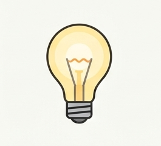
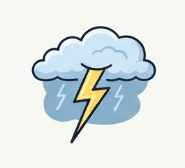
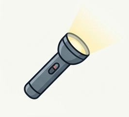
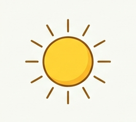
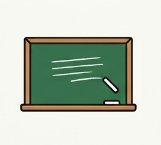
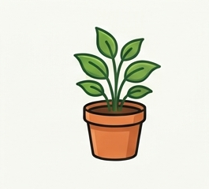
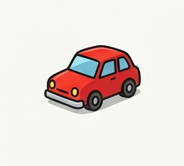

W03
F1 — Verschiedene Arten von Lichtquellen
NameKlasseDatum
Merksatz
Lichtquellen senden selbst Licht aus, man nennt sie auch selbstleuchtend. Beleuchtete Körper senden kein eigenes Licht aus, wir sehen sie nur, weil Licht einer Lichtquelle auf sie fällt und zurückgeworfen wird.
1Lichtquelle oder beleuchteter Körper?
Schreibe unter jedes Bild den passenden Begriff. Kreuze außerdem an, ob es sich um eine Lichtquelle oder einen beleuchteten Körper handelt.
☐ Lichtquelle☐ beleuchteter Körper

☐ Lichtquelle☐ beleuchteter Körper
☐ Lichtquelle☐ beleuchteter Körper

☐ Lichtquelle☐ beleuchteter Körper

☐ Lichtquelle☐ beleuchteter Körper

☐ Lichtquelle☐ beleuchteter Körper
☐ Lichtquelle☐ beleuchteter Körper

☐ Lichtquelle☐ beleuchteter Körper
☐ Lichtquelle☐ beleuchteter Körper

☐ Lichtquelle☐ beleuchteter Körper

☐ Lichtquelle☐ beleuchteter Körper
2Weitere Beispiele
Nenne zwei weitere Beispiele für Lichtquellen, die …
a) in der Natur vorkommen:
b) vom Menschen geschaffen wurden:
3Aufgabe von Lichtquellen
Beschreibe in einem Satz, was alle Lichtquellen gemeinsam haben.
4Alt oder neu?
Welche der Lichtquellen aus Aufgabe 1 gibt es erst seit etwa 200 Jahren, seit es elektrischen Strom gibt? Welche kannten schon Menschen in der Steinzeit?
W03
F1 — Verschiedene Arten von Lichtquellen
Lösung
1Lichtquelle oder beleuchteter Körper?
Kerze
✕ Lichtquellebeleuchteter Körper
Glühlampe
✕ Lichtquellebeleuchteter Körper
Lagerfeuer
✕ Lichtquellebeleuchteter Körper
Blitz
✕ Lichtquellebeleuchteter Körper
Taschenlampe
✕ Lichtquellebeleuchteter Körper
Sonne
✕ Lichtquellebeleuchteter Körper
Mond
Lichtquelle✕ beleuchteter Körper
Tafel
Lichtquelle✕ beleuchteter Körper
Buch
Lichtquelle✕ beleuchteter Körper
Zimmerpflanze
Lichtquelle✕ beleuchteter Körper
Spielzeugauto
Lichtquelle✕ beleuchteter Körper
2Weitere Beispiele
a) z. B. Glühwürmchen, Polarlicht, Sterne
b) z. B. Feuerwerk, Bildschirm/Display, Laser
3Aufgabe von Lichtquellen
Alle Lichtquellen senden selbst Licht aus.
4Alt oder neu?
Erst seit etwa 200 Jahren: Glühlampe, Taschenlampe (beide brauchen elektrischen Strom).
Schon in der Steinzeit bekannt: Kerze/Feuer allgemein (Lagerfeuer), Blitz, Sonne — das sind Feuer und natürliche Lichtquellen, die es unabhängig von Technik gibt.